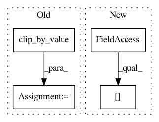

9c62f4f3d7c6b98f311ef82863281b088ce4d48a,onnx_tf/handlers/backend/clip.py,Clip,_common,#Any#Any#,26
Before Change
y = tf.clip_by_value(x, clip_value_min, clip_value_max)
y = tf.cast(y, x_dtype)
else:
y = tf.clip_by_value(x, clip_value_min, clip_value_max)
return [y]
@classmethod
After Change
need_cast = x_dtype in cls.cast_map
x = tf.cast(x, cls.cast_map[x_dtype]) if need_cast else x
clip_value_min = tf.cast(
clip_value_min, cls.cast_map[x_dtype]) if need_cast else clip_value_min
clip_value_max = tf.cast(
clip_value_max, cls.cast_map[x_dtype]) if need_cast else clip_value_max
y = tf.clip_by_value(x, clip_value_min, clip_value_max)
In pattern: SUPERPATTERN
Frequency: 3
Non-data size: 4
Instances
Project Name: onnx/onnx-tensorflow
Commit Name: 9c62f4f3d7c6b98f311ef82863281b088ce4d48a
Time: 2020-10-02
Author: chhuang@us.ibm.com
File Name: onnx_tf/handlers/backend/clip.py
Class Name: Clip
Method Name: _common
Project Name: IBM/adversarial-robustness-toolbox
Commit Name: 575373a1b7a590cbc06bd03137a4a937b7f4d808
Time: 2020-04-22
Author: M.N.Tran@ibm.com
File Name: art/attacks/evasion/projected_gradient_descent/projected_gradient_descent_tensorflow_v2.py
Class Name: ProjectedGradientDescentTensorflowV2
Method Name: _projection
Project Name: arnomoonens/yarll
Commit Name: 8b97a5a397372f622bd2c06924c75b1104008698
Time: 2018-05-29
Author: arno.moonens@gmail.com
File Name: agents/reinforce.py
Class Name: REINFORCEContinuous
Method Name: make_trainer